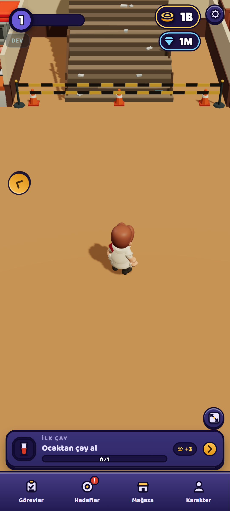
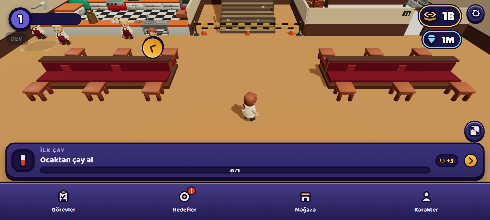
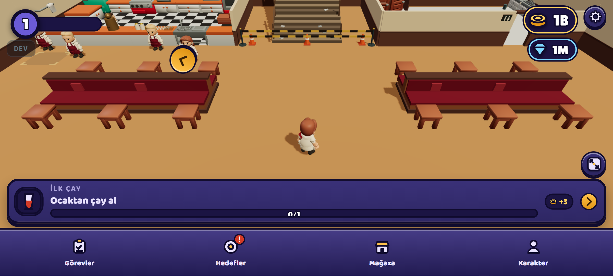
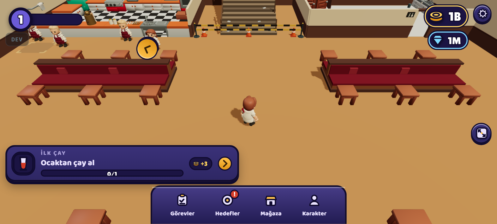
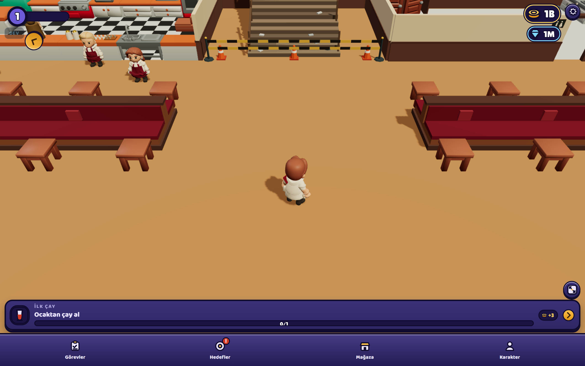
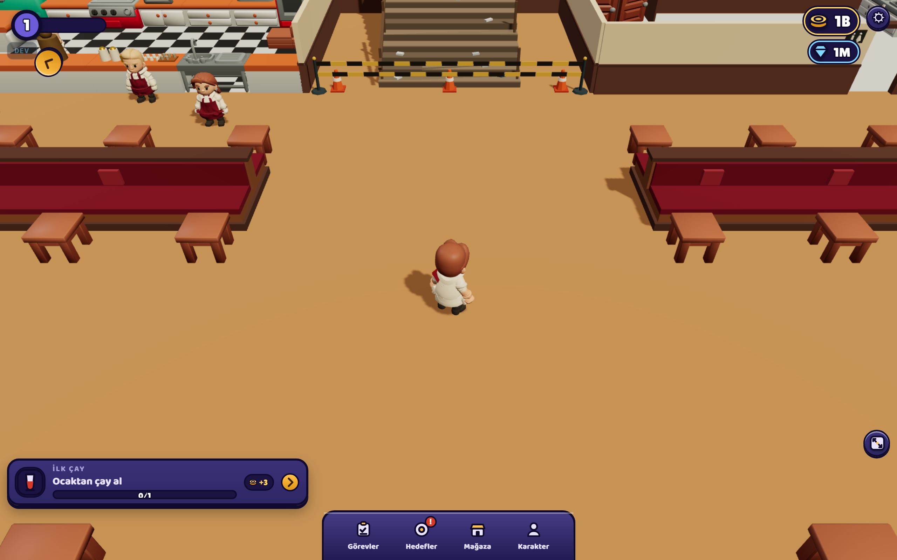

Ekran yönü · yatay HUD · açılış ekranı. İkon bu pakette yok — onu sen yaptıracaksın. Sayılar: docs/olcum-kabuk-f1b.txt (TAM koşu · 108 hücre · dünya denetimi 18/18 temiz · konsol hatası 0).
Dürüst cevap: kilitlemek oyunda hiçbir şeyi değiştirmez. Sadece oyuncunun ne göreceğini garanti eder.
| Kilitlemek şunu DEĞİŞTİRİR | Kilitlemek şunu DEĞİŞTİRMEZ |
|---|---|
| ① Oyuncunun fiilen hangi yönde oynadığını. Telefonlar uygulamayı portrede açar. Serbest bırakılırsa çoğu oyuncu hiç döndürmez ve 178 br² görür; yatay kilitlenirse herkes 571 br² görür. | Oyunun mantığını, kamera formülünü, asset'leri, dosya boyutunu, performansı. Hiçbiri yöne bağlı değil. |
| ② Kaç düzeni iyi tutmak zorunda olduğumuzu. Serbest = portre + yatay (+ tablet varyantları) hepsi bakımlı kalmalı. Kilitli = bir tanesi. | Döndürmenin çalışıp çalışmadığını. Bugün zaten çalışıyor: canlı portre→yatay→portre sınamasında 0 konsol hatası, HUD taşması 0. |
| ③ Mağaza görsellerini. Serbest bırakırsak vitrin iki yönü de temsil etmeli. | HUD doluluğunu. O ayrı bir kalem — ve senin önerin onu zaten çözüyor (aşağıda). Yön kararı beklemeden yapılabilir. |


| Kadraj | oran | açık zemin | görünen ankraj | oyuncu | HUD ekranın |
|---|---|---|---|---|---|
| Portre 20:9 · 412×915 | 0,45 | 178,2 br² | 1 / 26 | 84,8 px | %19,7 |
| Yatay 20:9 · 915×412 | 2,22 | 570,8 br² | 22 / 26 | 48,4 px | %38,3 |
| Portre 16:9 dar · 360×640 | 0,56 | 207,4 br² | 5 / 26 | 58,9 px | %29,2 |
| Yatay 16:9 dar · 640×360 | 1,78 | 422,0 br² | 17 / 26 | 44,0 px | %45,9 |
| Tablet portre 4:3 · 800×1280 | 0,63 | 246,5 br² | 5 / 26 | 124,0 px | %12,6 |
| Tablet yatay 4:3 · 1280×800 | 1,60 | 533,2 br² | 17 / 26 | 89,9 px | %18,9 |
Dayanıklılık: 54 karşılaştırmada yatay/portre açık zemin oranı 1,37× … 3,36× (ortalama 2,03×). Yön hiçbir dünyada, noktada, kamera kademesinde tersine dönmüyor.
Portrede kamera CAMERA_PORTRAIT_CLAMP = 1,3 ile kelepçeli; oranın istediği açılma 2,22. Kelepçeyi açınca portre 1,80× iyileşiyor — ama altı ayrı dünya+nokta hücresinin altısında da portrenin EN İYİ hâli yatayın TABANINI yakalayamıyor (1,24× – 1,87× geride). Ve belirleyici olan şu: o noktada karakter ikisinde de aynı boyda (portrede 47,7 px, yatayda ~50 px). Yani yatayın avantajı "daha uzaktan bakmak" değil.
| Kol | Ne olur | Bedeli |
|---|---|---|
| K0 — serbest bırak bugünkü hâl · D-008 |
Oyuncu seçer. Döndürme zaten çalışıyor, ek iş yok. | Telefon portrede açıldığı için varsayılan deneyim 178 br² olur. İki düzeni birden bakımlı tutmak gerekir. |
| K0+ — serbest, ama portrede kelepçe açılır | Seçim kalır, portre 178 → 336 br² çıkar. | Karakter portrede 85 → 48 px'e iner (0,57×). D-061'in senin verdiğin kararını (taban B, düğme C) geçersizleştirir. |
| K1 — yatay kilidi | Herkes dükkânı görür: 571 br² · 22/26 ankraj. Tek düzen bakımlı tutulur. | Seçimi elden alır; tek elle oynanış zorlaşır (joystick dinamik olduğu için kırılmaz). D-008 revize edilir. |
| K2 — portre kilidi | Tek elle oynanış garanti. | Dükkân görünmüyor (1/26 ankraj). Ölçüm bu kolu desteklemiyor. |
"görev normal gerektiği kadar genişlikte kalabilir tablette hatta [yata]ydaki nav bile"
Bunu yoruma bırakmayıp ölçülmüş bir kol yaptım (YD) ve gerçek oyunun üstünde koşturdum — maket değil, depoya da hiçbir şey yazılmadı. Kök sebep senin tarif ettiğin şeyin aynısı: bugün hem şerit hem nav left:0; right:0 ile ekranın tamamına geriliyor. Ekran büyüdükçe öğe büyüyor ama içeriği büyümüyor — aradaki boşluk açılıyor.
| Kol | HUD ekranın | açık zemin |
|---|---|---|
| Y0 — taban (bugün) | %38,4 | 588,4 br² |
| YA — alt gezinme yan raya | %27,1 | −0,1% |
| YB — görev şeridi köşe kartına | %28,2 | +1,9% |
| YD — doğal genişlik (senin önerin)öneri | %19,0 | +3,5% |
| YC — yan ray + kompakt şerit | %18,1 | +1,0% |


"Tablette oynanırsa oyun çok kötü durur" dedin. Sayıya baktım: tablet yatay aslında en iyi konfigürasyon — 533 br² açık zemin, karakter 90 px (telefon yatayında 48), HUD %18,9. Sayıya göre sorun yok.
Kareye bakınca sorun var ve metrik onu göremiyor: görev şeridi 1280 px'e kadar geriliyor, içindeki ilerleme çubuğu upuzun boş bir çizgiye dönüyor. Metrik alan ölçüyor, gerilme ölçmüyor. İkinci kez aynı ders bu turda: araç, gözün yakaladığını kaçırdı.


"daha hareketli bir şeyler olabilir mi acaba? … bence dile göre uygulama adı da olabilir veya öyle kalsın mı acaba"
D-130 cihaz adını zaten dile bağladı (values / values-tr). Bugünkü hâlde İngilizce cihazdaki oyuncu ana ekranda Tea House Tycoon görüyor, açılışta Köşe Kıraathanesi. Bu bir tutarsızlık, üstelik "genel kullanıcıya hitap etsin" hedefinin tam karşıtı. Aynı iki dizeyi kullanırım — yeni metin yazmam, tek kaynak kalır.
Süs animasyonu eklemek yerine çubuğu ortadan kaldırıp yerine anlatıyı koymak: semaverden ince belli bardağa çay akar, bardaktaki seviye = yükleme yüzdesi, dolunca buhar yükselir ve sahneye geçilir. Böylece hareket süs olmaz, "Semaver ısınıyor…" yazısı da doğruyu söyler. Oyunun kendi şekil dilini kullanır, ek asset istemez.
Daha sakin bir alternatif: çubuk kalır, sadece semaverden yükselen buhar ve hafif bir ışık nefesi eklenir. Daha ucuz, daha az akılda kalır.
| # | Soru | Seçenekler | Önerim |
|---|---|---|---|
| 1 | Ekran yönü | K0 serbest · K0+ serbest+kelepçe · K1 yatay kilidi · K2 portre kilidi | K1, ama bu senin ürün kararın — ölçüm yalnız "yatay 2× daha fazla dükkân gösteriyor" diyor, "yatay daha iyi oyun" demiyor. Geri alınabilir bir karar. |
| 2 | Yatay/tablet HUD | Y0 · YA · YB · YD · YC | YD — senin önerin. Her iki kadrajda da en iyi, yön kararından bağımsız. |
| 3 | Açılış ekranı | çay-dolan-bardak · sakin buhar · dokunma | Çay-dolan-bardak + dile bağlı başlık. |